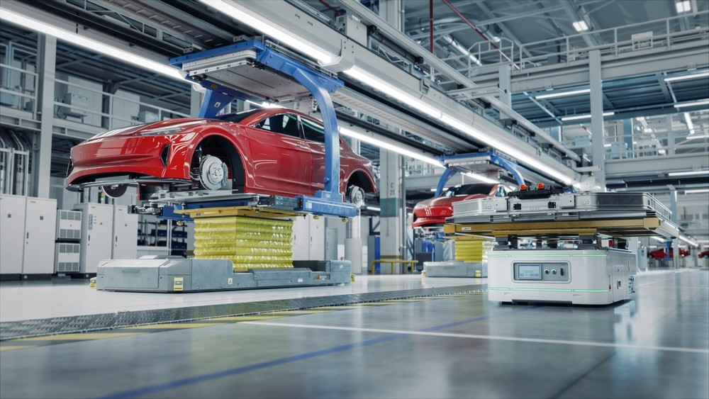
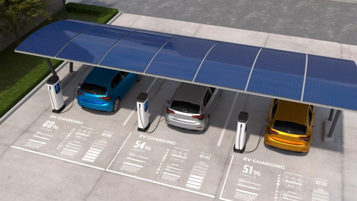
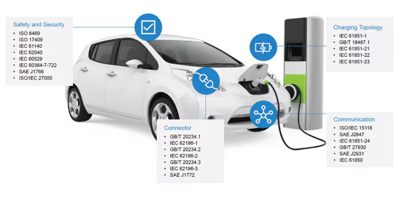
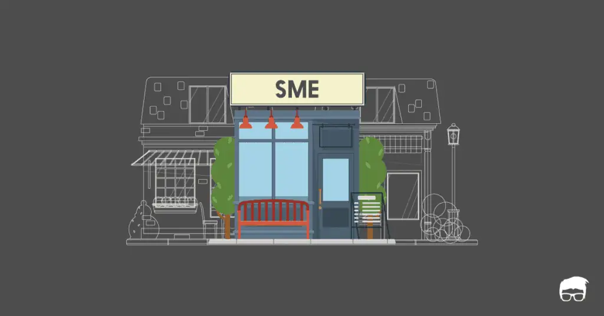

As India stands on the precipice of an electric vehicle (EV) revolution, the path forward is marked by both challenges and opportunities. The country has made significant strides in adopting electric mobility, but to achieve mass adoption and become a global leader in EV manufacturing, India must address several critical areas. These areas include building local manufacturing capacity, expanding charging infrastructure, standardization efforts, and supporting small and medium enterprises (SMEs).
This blog delves into each of these key areas, exploring the strategies and actions needed to overcome the existing challenges and pave the way for a sustainable and scalable EV ecosystem in India.
Building Local Manufacturing Capacity
One of the most pressing challenges for India’s EV sector is its heavy reliance on imported components, particularly battery cells, e-motor magnets, and electronics. Currently, 60-70% of these critical components are sourced from countries like China, which not only exposes India to supply chain vulnerabilities but also hampers the scalability of local manufacturing. To create a resilient and self-sufficient EV ecosystem, India must focus on developing robust local manufacturing capacity.
1. Investment in Research and Development (R&D): Innovation is the cornerstone of a successful manufacturing ecosystem. India needs to invest heavily in R&D to develop indigenous technologies for EV components, particularly batteries. Advanced battery technologies, such as solid-state batteries and next-generation silicon anodes, require extensive research to become commercially viable. By fostering a strong R&D culture, India can reduce its dependence on foreign technologies and create competitive, homegrown alternatives.
2. Incentives for Domestic Production: The government can play a pivotal role in encouraging domestic production through targeted incentives. These could include tax breaks, subsidies, and grants for companies investing in EV component manufacturing. Special Economic Zones (SEZs) dedicated to EV production could also be established, offering manufacturers a conducive environment with reduced regulatory hurdles and better infrastructure.

3. Collaboration with Global Players: India should actively seek collaborations with global EV manufacturers and technology companies. These partnerships can facilitate the transfer of knowledge and technology, helping Indian companies to scale up their manufacturing capabilities more quickly. Joint ventures, technology licensing agreements, and strategic alliances can all contribute to building a strong local manufacturing base.
4. Skill Development and Training: A skilled workforce is essential for any manufacturing ecosystem. India must invest in training programs to upskill its labor force, particularly in areas like battery manufacturing, electronics assembly, and precision engineering. By creating a talent pool with specialized skills, India can enhance the quality and efficiency of its EV manufacturing sector.
Expanding Charging Infrastructure
The expansion of charging infrastructure is another critical area that needs immediate attention. One of the major barriers to EV adoption in India is the lack of accessible and reliable charging stations. To make EVs a viable option for the masses, India must rapidly expand its charging infrastructure across urban and rural areas.
1. Strategic Placement of Charging Stations: Charging stations need to be strategically located to cater to both urban and rural areas. In cities, stations should be placed at key points like shopping centers, office complexes, and residential areas. In rural areas, they should be positioned along major highways and in towns that serve as hubs for surrounding villages. The goal is to ensure that EV owners have easy access to charging facilities, no matter where they are.
2. Government Initiatives and Public-Private Partnerships: The government can take the lead in expanding charging infrastructure through initiatives like the Faster Adoption and Manufacturing of Hybrid and Electric Vehicles (FAME) scheme. Public-private partnerships (PPPs) can also be instrumental in accelerating infrastructure development. By collaborating with private companies, the government can leverage private sector efficiency and innovation while providing regulatory support.

3. Integration with Renewable Energy Sources: To maximize the environmental benefits of EVs, charging stations should be integrated with renewable energy sources like solar and wind power. This approach not only reduces the carbon footprint of EVs but also enhances the sustainability of the charging infrastructure. Incentives for renewable energy-powered charging stations could encourage wider adoption of this practice.
4. Standardization of Charging Infrastructure: Standardizing charging connectors, payment systems, and station designs can simplify the user experience and make it easier for manufacturers to develop compatible technologies. Standardization also facilitates the rapid scaling of infrastructure, as manufacturers and service providers can follow a unified set of guidelines.
Standardization Efforts
Standardization plays a crucial role in the scalability of the EV ecosystem. The lack of uniform standards, particularly in battery specifications, complicates component sourcing and integration, making it difficult for manufacturers to scale up production efficiently. To overcome this hurdle, industry stakeholders must collaborate to create and enforce standards for EV components and infrastructure.
1. Establishing Industry-Wide Standards: Industry associations, along with government bodies, should work together to establish comprehensive standards for key EV components, including batteries, charging systems, and electronic components. These standards should be aligned with global benchmarks to ensure compatibility and competitiveness in the international market.
2. Harmonization of Regulatory Frameworks: India’s regulatory frameworks for EVs and related infrastructure need to be harmonized to eliminate inconsistencies and streamline the approval process for new technologies and products. A clear and consistent regulatory environment will encourage more companies to invest in the EV sector and speed up the adoption of new technologies.

3. Creating a Certification System: A robust certification system for EV components and infrastructure can ensure that all products meet the established standards for safety, performance, and interoperability. Certification also builds consumer confidence in the quality and reliability of EVs and their supporting infrastructure.
4. Encouraging Industry Collaboration: Collaboration among manufacturers, suppliers, and industry bodies is essential for effective standardization. Regular industry forums and working groups can facilitate the exchange of ideas and the development of consensus on critical issues. Such collaboration will also help in addressing emerging challenges and adapting standards to new technological advancements.
Supporting SMEs
Small and medium enterprises (SMEs) are the backbone of India’s manufacturing sector, including the EV ecosystem. However, many SMEs face challenges in scaling up their operations to meet the growing demand for EV components. Providing the necessary support to SMEs is crucial for the overall success of India’s EV manufacturing ambitions.
1. Access to Finance: One of the biggest challenges for SMEs is accessing the capital needed to expand their operations. The government and financial institutions should offer tailored financial products, such as low-interest loans, grants, and venture capital, specifically designed for SMEs in the EV sector. This financial support can help SMEs invest in new technologies, increase production capacity, and improve product quality.
2. Technology Upgradation: SMEs often struggle with outdated technology, which hampers their ability to compete with larger players. Providing access to modern manufacturing technologies, either through government programs or industry partnerships, can help SMEs enhance their productivity and efficiency. Technology incubators and innovation hubs can also play a role in supporting SMEs in adopting advanced technologies.

3. Training and Capacity Building: Capacity building is essential for SMEs to scale up their operations effectively. Training programs that focus on modern manufacturing techniques, quality control, and supply chain management can help SMEs improve their operational capabilities. Additionally, mentorship programs that connect SMEs with industry experts can provide valuable insights and guidance.
4. Strengthening Supply Chain Networks: A fragmented supply chain is a significant challenge for SMEs, leading to coordination issues and potential delays. Creating integrated supply chain networks that connect SMEs with larger manufacturers, suppliers, and logistics providers can streamline operations and reduce inefficiencies. Government initiatives that promote supply chain collaboration and integration can be particularly beneficial in this regard.
Conclusion
India’s journey towards becoming a global leader in electric vehicle manufacturing is filled with both challenges and opportunities. By focusing on building local manufacturing capacity, expanding charging infrastructure, standardizing components and processes, and supporting SMEs, India can overcome these challenges and pave the way for the mass adoption of electric vehicles. The future of India’s EV ecosystem is promising, but it requires coordinated efforts from all stakeholders—government, industry, and consumers—to make it a reality. With the right strategies and investments, India can not only meet its domestic EV demand but also become a major player in the global electric mobility landscape.